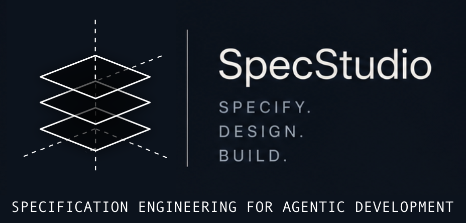

Specification-driven systems design and development. We help founders and technical teams transform ambiguous ideas into coherent digital systems through structured thinking and architectural clarity.
Unclear requirements. Fragmented workflows. Feature accumulation without architectural vision. Interfaces built without conceptual coherence.
Modern AI tools can generate code rapidly. But speed without clarity creates complexity. Scope creep without structural discipline. Codebase grows but coherence disappears.
Clarifying intent, workflows, requirements, and technical structure before implementation begins.
Creating restrained, coherent interfaces and systems that feel understandable and durable.
Careful implementation using modern frameworks, automation, and AI-assisted development workflows.
Structured thinking for digital systems.
We believe good software begins with discrimination: knowing what should exist, what should be removed, and how complexity can be transformed into clarity.
Specification is not bureaucracy. It is architecture.
Taste is not decoration. It is judgment applied to systems.
Technology should reduce friction, not multiply confusion.
Transforming ideas into coherent technical direction.
Structuring systems before implementation begins.
Modern tooling guided by human architectural oversight.
Minimal, coherent, human-centered interaction design.
Structured communication and documentation systems.
Deployment, automation, and operational continuity.
Modern AI systems can generate astonishing amounts of code, but implementation speed does not eliminate the need for architectural clarity. In many cases, it magnifies the consequences of poor specification.
Automation without coherent structure tends to produce fragile systems, inconsistent interfaces, and long-term technical entropy. Good architecture establishes boundaries, relationships, and conceptual integrity before acceleration begins.
As code generation becomes increasingly commoditized, judgment becomes more valuable. The essential question is no longer whether something can be built, but whether it should exist in its current form at all.
Taste in software is not visual decoration. It is the disciplined ability to reduce unnecessary complexity, preserve coherence across systems, and create interactions that feel calm, intelligible, and durable.
Large language models have changed implementation workflows permanently. They are extraordinarily effective at producing components, patterns, and technical scaffolding. But they do not possess responsibility for conceptual direction.
Human oversight remains essential at the level of architecture, specification, ethics, and long-term system coherence. Structured thinking remains the essential human layer for digital systems. The future of development belongs not merely to faster builders, but to people capable of defining meaningful and understandable systems.
Tell us a little about your project and we'll follow up with a free 30-minute discovery call.